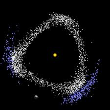

En sistemas gravitacionales reales, el movimiento orbital raramente puede describirse como un problema de dos cuerpos aislado. Las perturbaciones gravitacionales introducidas por terceros cuerpos producen variaciones acumulativas en los parametros orbitales.
Las fuerzas externas pueden modificar el semieje mayor, excentricidad e inclinacion orbital. Estos efectos son especialmente relevantes en sistemas planetarios multiples.
Una resonancia orbital ocurre cuando dos cuerpos presentan periodos orbitales relacionados por una razon de numeros enteros simples, como 2:1 o 3:2. Estas configuraciones pueden estabilizar o desestabilizar orbitas.
En sistemas con multiples interacciones gravitacionales, pequeñas variaciones iniciales pueden generar comportamientos caoticos a largo plazo, limitando la predictibilidad exacta.
